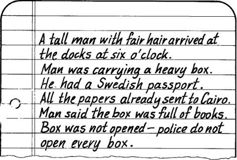

Listen to Part 1:
Bây giờ đã hơn bảy giờ tối rồi. Chuyến tàu từ Cairo đến Alexandria lúc hai giờ rưỡi chiều. Rất có thể kẻ sát nhân Pearson đang ở trên tàu đến Beirut.
Salahadin nói với Ahmed: "Chúng ta phải điện thoại đến Alexandria ngay.
Salahadin cầm máy điện thoại lên. Anh ta hỏi cảnh sát ở bến tàu ở Alexandria. Khoảng mười phút trôi qua, thì tiếng chuông điện thoại vang. Đó là điện thoại gọi đến từ Alexandria.
'Tôi là Salahadin El Nur đây. Tôi là thanh tra cảnh sát và tôi muốn nói chuyện với người chỉ huy của anh.
Chỉ huy cảnh sát ở cảng đi đến điện thoại. Salahadin đặt ra một vài câu hỏi và viết câu trả lời vào vở ghi chú. Đây là những ghi chú của anh ta:

Salahadin đặt điện thoại xuống và nhìn vào những dòng ghi chú một lát rồi nói với Ahmed.
'Kẻ sát hại Pearchson đã đi Beirut rồi', anh ta nói, "Tôi chắc chắn là như thế.
Listen to Part 2:
'Thế thì ta có thể gửi 1 tin nhắn đến chiếc tàu đó", Ahmen trả lời.
'Kô', Salahadin trả lời, 'chúng ta không chắc chắn hoàn toàn. Nhiều đàn ông có mái tóc vàng hoe và rất nhiều người cũng xách theo những chiếc va ly nặng nề. Tôi pải gặp anh ta, phai trò chuyện với anh ta.'
'Nhưng làm thế nào mà anh có thể làm như vậy được', Ahmed hổi, 'Bây giờ đã qúa trễ rồi. Tàu đã đi mất rồi.'
'Tôi có thể đến được Beirut trước anh ta', Salahadin đáp, ' hôm lay là Thứ Hai. Chiếc tàu sẽ khồng kịp tới Beirut trc tận tối mai đâu. Mà tôi có thể đi bằng máy bay mà.
'Máy bay mất có 2 giờ đồng hồ', Ahmed nói,
'Đúng vậy' , Salahadin trả lời, "Tớ đi máy bay vào ngày s ángmai và tớ sẽ có thể đến Beirut trc giữa trưa.'
'Ý kiến hay đấy' Ahmed nói, "Anh có thê gặp người đàn ông đó ngay tịa bến tàu Beirut".
Và giờ thì tôi đi đây. Tôi còn phải rẩ nhiều việc', Salahadin nói. "Tôi phải đặt chỗ trên chuyến máy bay và lấy vé. Chiều nanti tôi sẽ quay lại gặp anh.Cảm ơn anh về sự giuúp đỡ. Tạm biệt."